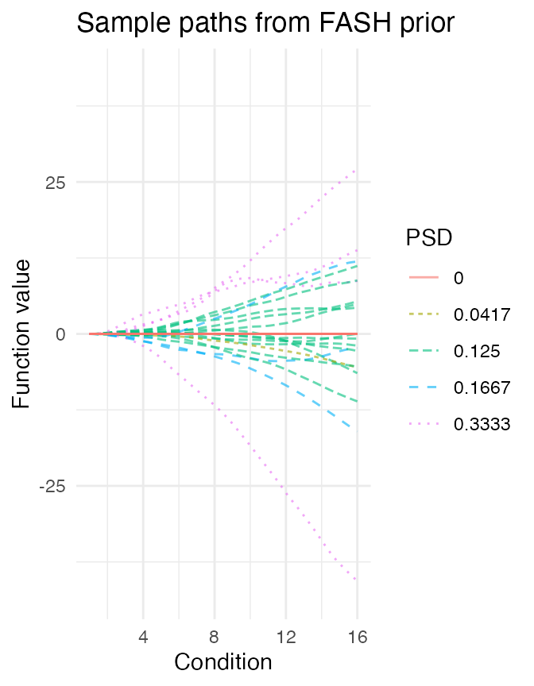
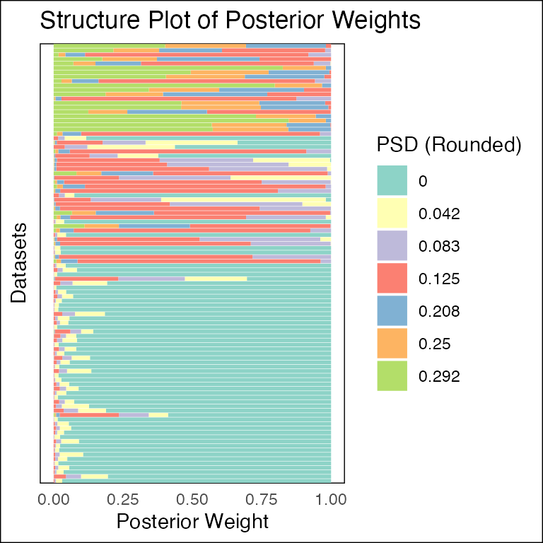

knitr::opts_chunk$set(fig.width = 8, fig.height = 6)
library(fashr)
# Plot power against FDR
power_versus_fdr <- function(fdr_result, true_indices, fdr_vec = seq(0.01,0.99,by = 0.01), plot = TRUE){
power <- numeric(length(fdr_vec))
for (i in 1:length(fdr_vec)){
significant_indices <- fdr_result$index[fdr_result$FDR < fdr_vec[i]]
power[i] <- length(intersect(significant_indices, true_indices))/length(true_indices)
}
result <- data.frame(fdr = fdr_vec, power = power)
if (plot){
plot(fdr_vec, power, type = "l", xlab = "FDR", ylab = "Power")
}
return(result)
}
# Plot calibration of FDR
calibration_fdr <- function(fdr_result, true_indices, fdr_vec = seq(0.01,0.99,by = 0.01), plot = TRUE){
true_discovery_rate <- numeric(length(fdr_vec))
for (i in 1:length(fdr_vec)){
significant_indices <- fdr_result$index[fdr_result$FDR < fdr_vec[i]]
true_discovery_rate[i] <- length(intersect(significant_indices, true_indices))/length(significant_indices)
}
result <- data.frame(fdr = fdr_vec, Tfdr = (1 - true_discovery_rate))
if (plot){
plot(Tfdr ~ fdr_vec, type = "l", xlab = "nominal FDR", ylab = "observed FDR", data = result)
lines(c(0,1), c(0,1), col = "red", lty = 2)
}
return(result)
}Overview
Suppose we have \(N\) sets of eQTLs. The effect size estimate for the \(i\)th eQTL at time \(t_{ir}\), where \(r \in \{1, \ldots, R_i\}\), is denoted by \(\hat{\beta}_i(t_{ir})\). Given the true effect \(\beta_i(t_{ir})\), the observed estimate is assumed to follow \[ \hat{\beta}_i(t_{ir}) \mid \beta_i(t_{ir}) \overset{ind}{\sim} \mathcal{N}(\beta_i(t_{ir}), s_{ir}^2), \] where \(s_{ir}\) denotes the standard error at time \(t_{ir}\). Let \(\boldsymbol{\hat{\beta}}_i = [\hat{\beta}_i(t_{i1}), \ldots, \hat{\beta}_i(t_{iR_i})] \in \mathbb{R}^{R_i}\) and \(\boldsymbol{s}_i = [s_{i1}, \ldots, s_{iR_i}] \in \mathbb{R}^{R_i}\) denote the vectors of effect size estimates and standard errors for the \(i\)th eQTL, respectively.
The goal of fashr is to perform functional adaptive
shrinkage (FASH) for inferring the posterior distribution of the effect
size function \(\beta_i(t)\), given the
observed data \(\boldsymbol{\hat{\beta}}_i\) and \(\boldsymbol{s}_i\).
FASH assumes that all \(\beta_i(t)\) are i.i.d. draws from a common prior \(g_\beta\). The prior \(g_\beta\) has the form of a finite mixture of Gaussian processes (GPs): \[ g_\beta \mid \boldsymbol{\pi} = \sum_{k=0}^{K} \pi_k \, \text{GP}_k. \] Each GP component \(\text{GP}_k\) is specified via the differential equation: if \(\beta(t) \sim \text{GP}_k\), then \[ L\beta(t) = \sigma_k W(t), \] where \(W(t)\) is a Gaussian white noise process and \(L\) is a known \(p\)th-order linear differential operator. The standard deviation parameter \(\sigma_k\) determines how much \(\beta(t)\) can deviate from the base model, defined as the null space \(S_0 = \text{Null}\{L\}\).
Given a grid of \(\{\sigma_1, ..., \sigma_K\}\), the prior mixing weights \(\hat{\boldsymbol{\pi}}\) are estimated by maximizing the marginal likelihood of the observed effect size estimates: \[ \hat{\boldsymbol{\pi}} = (\hat{\pi}_1, ..., \hat{\pi}_K) = \arg\max_{\boldsymbol{\pi}} \sum_{i=1}^{N} \log\left(\sum_{k=0}^{K} \pi_k \mathbf{L}_{ik}\right), \] where \(\mathbf{L}_{ik}\) denotes the marginal likelihood of \(\boldsymbol{\hat{\beta}}_i\) under the \(k\)th GP component. Based on the estimated prior \(\hat{g}_\beta\), the posterior distribution for \(\beta_i(t)\) can be computed as: \[ p(\beta_i(t) \mid \boldsymbol{\hat{\beta}}_i, \hat{\boldsymbol{\pi}}) = \sum_{k=0}^{K} \tilde{\pi}_k \, p_k(\beta_i(t) \mid \boldsymbol{\hat{\beta}}_i), \] where \(p_k(\beta_i(t) \mid \boldsymbol{\hat{\beta}}_i)\) is the posterior distribution under the \(k\)th GP component.
In the following section, we illustrate this with simulated data.
Setup
We consider effect size estimates for \(N = 100\) eQTLs measured from day \(t = 1\) to day \(t = 16\):
- There are 50 eQTLs that are non-dynamic, that is, their effect sizes remain constant over time (Category A).
- There are 30 eQTLs with linear dynamics, that is, their effect sizes change linearly over time (Category B).
- There are 20 eQTLs with nonlinear dynamics, that is, their effect sizes change nonlinearly over time (Category C).
For each eQTL at each time point, the standard error \(s_{ir}\) is randomly drawn from \(\{0.05, 0.1, 0.2\}\).
set.seed(1)
N <- 100
propA <- 0.5; propB <- 0.3; propC <- 0.2
sigma_vec <- c(0.05, 0.1, 0.2)
sizeA <- N * propA
data_sim_list_A <- lapply(1:sizeA, function(i) simulate_process(sd_poly = 0.2, type = "nondynamic", sd = sigma_vec, normalize = TRUE))
sizeB <- N * propB
if(sizeB > 0){
data_sim_list_B <- lapply(1:sizeB, function(i) simulate_process(sd_poly = 1, type = "linear", sd = sigma_vec, normalize = TRUE))
}else{
data_sim_list_B <- list()
}
sizeC <- N * propC
data_sim_list_C <- lapply(1:sizeC, function(i) simulate_process(sd_poly = 0, type = "nonlinear", sd = sigma_vec, sd_fun = 1, p = 1, normalize = TRUE))
datasets <- c(data_sim_list_A, data_sim_list_B, data_sim_list_C)
labels <- c(rep("A", sizeA), rep("B", sizeB), rep("C", sizeC))
indices_A <- 1:sizeA
indices_B <- (sizeA + 1):(sizeA + sizeB)
indices_C <- (sizeA + sizeB + 1):(sizeA + sizeB + sizeC)
dataset_labels <- rep(as.character(NA),100)
dataset_labels[indices_A] <- paste0("A",seq(1,length(indices_A)))
dataset_labels[indices_B] <- paste0("B",seq(1,length(indices_B)))
dataset_labels[indices_C] <- paste0("C",seq(1,length(indices_C)))
names(datasets) <- dataset_labels
par(mfrow = c(3, 3))
for(i in indices_A[1:3]){
plot(datasets[[i]]$x, datasets[[i]]$y, type = "p", col = "black", lwd = 2, xlab = "time", ylab = "effect", ylim = c(-1.5, 1.5), main = paste("Category A: ", i))
lines(datasets[[i]]$x, datasets[[i]]$truef, col = "red", lwd = 1)
}
for(i in indices_B[1:3]){
plot(datasets[[i]]$x, datasets[[i]]$y, type = "p", col = "black", lwd = 2, xlab = "time", ylab = "effect", ylim = c(-1.5, 1.5), main = paste("Category B: ", i))
lines(datasets[[i]]$x, datasets[[i]]$truef, col = "red", lwd = 1)
}
for(i in indices_C[1:3]){
plot(datasets[[i]]$x, datasets[[i]]$y, type = "p", col = "black", lwd = 2, xlab = "time", ylab = "effect", ylim = c(-1.5, 1.5), main = paste("Category C: ", i))
lines(datasets[[i]]$x, datasets[[i]]$truef, col = "red", lwd = 1)
}
Let’s take a look at the data structure:
length(datasets)## [1] 100This is the first dataset:
datasets[[1]]## x y truef sd
## 1 1 -0.061077677 0 0.20
## 2 2 0.075589058 0 0.05
## 3 3 0.038984324 0 0.10
## 4 4 -0.031062029 0 0.05
## 5 5 -0.442939977 0 0.20
## 6 6 0.224986184 0 0.20
## 7 7 -0.004493361 0 0.10
## 8 8 -0.001619026 0 0.10
## 9 9 0.188767242 0 0.20
## 10 10 0.164244239 0 0.20
## 11 11 0.029695066 0 0.05
## 12 12 0.045948869 0 0.05
## 13 13 0.039106815 0 0.05
## 14 14 0.007456498 0 0.10
## 15 15 -0.198935170 0 0.10
## 16 16 0.061982575 0 0.10Take a look at the true label of the datasets:
table(labels)## labels
## A B C
## 50 30 20Fitting FASH
The main function for fitting FASH is fash(). By
default, users should provide a list of datasets
(data_list), and specify the column names for the effect
size (Y), its standard deviation (S), and the
time variable (smooth_var).
Computation can be parallelized by specifying the number of cores
(num_cores).
Reducing the number of basis functions (num_basis) can also
improve computational speed.
The function fash() sequentially performs the following
key steps:
-
Compute the likelihood matrix
\[ \mathbf{L}_{ik} = p(\hat{\boldsymbol{\beta}}_i \mid \text{GP}_k), \]
for each eQTL \(i\) and each GP component \(k\).
-
Estimate the prior mixing weights \(\hat{\boldsymbol{\pi}}\) by maximizing the marginal likelihood:
\[ \hat{\boldsymbol{\pi}} = \arg\max_{\boldsymbol{\pi}} \sum_{i=1}^{N} \log\left(\sum_{k=0}^{K} \pi_k \mathbf{L}_{ik}\right). \]
-
Compute the posterior weights for each eQTL \(i\) and GP component \(k\):
\[ \tilde{\pi}_{ik} = \frac{\pi_k \mathbf{L}_{ik}}{\sum_{j=0}^{K} \pi_j \mathbf{L}_{ij}}, \]
where \(\tilde{\pi}_{i0}\) is the local false discovery rate (LFDR) under the null hypothesis \(\beta_i(t) \in S_0\).
Testing Nonlinear Dynamic
We first aim to detect dynamic eQTLs with nonlinear dynamics (Category C).
In this case, we specify the base model \(S_0 = {\beta(t) = c + bt \mid c, b \in
\mathbb{R}}\) as the space of linear functions. Therefore, we
choose \(L = \frac{d^2}{dt^2}\), which
is a second-order differential operator. This choice corresponds to the
second Integrated Wiener Process (IWP2) model
(order = 2).
We aim to obtain the posterior for each \(\beta_i(t)\) and test the null hypothesis \(H_0: \beta_i(t) \in S_0\) at a given FDR level.
fash_fit <- fash(Y = "y", smooth_var = "x", S = "sd", data_list = datasets, order = 2)This is the output of fash():
fash_fit## Fitted fash Object
## -------------------
## Number of datasets: 100
## Likelihood: gaussian
## Number of PSD grid values: 25 (initial), 5 (non-trivial)
## Order of Integrated Wiener Process (IWP): 2Here, the grid of values \(\{\sigma_1,
\ldots, \sigma_K\}\) is specified using the grid
argument. Rather than being defined on the original scale, the
grid is specified on a slightly transformed scale for
easier interpretation.
Specifically, given a prediction step size \(h\) (pred_step), each grid
point is defined as \(c_h \sigma_k\),
where \(c_h\) is a positive scaling
constant that depends only on \(h\) and
\(L\). This scaling ensures that \(c_h \sigma_k\) can be interpreted as \(\text{SD}(\beta(t+h) \mid \beta(s), s <
t)\), representing the \(h\)-step predictive standard deviation
(PSD).
In the above example, we started with a default grid of 25 equally spaced PSD values from 0 to 2. After empirical Bayes estimation, the prior weights are nonzero only for 5 of these values. Grid values with zero prior weight are considered trivial and are removed automatically.
Let’s take a look at the estimated prior \(\hat{g}\):
fash_fit$prior_weights## psd prior_weight
## 1 0.00000000 0.81777652
## 2 0.04166667 0.01639577
## 3 0.12500000 0.10205327
## 4 0.16666667 0.03736387
## 5 0.33333333 0.02641057We can take a look at their posterior weights in each GP component:

Besides the heatmap plot, we could also visualize the result using a structure plot:
plot(fash_fit, plot_type = "structure", discrete = TRUE)
We can then use fdr_control to test the null hypothesis
that \(H_0: \beta_i(t) \in S_0\) at a
given FDR level. Specifically, the function takes the local false
discovery rate (LFDR) stored in the fash object and
computes the cumulative false discovery rate (FDR).
fdr_result <- fdr_control(fash_fit, alpha = 0.1, plot = TRUE)## 20 datasets are significant at alpha level 0.10. Total datasets tested: 100.
There are 20 eQTLs flagged as significant at FDR level 0.1. We can take out the indices of these eQTLs:
detected_indices <- fdr_result$fdr_results$index[fdr_result$fdr_results$FDR < 0.1]How many of the true (non-linear) dynamic eQTLs are detected?
sum(labels[detected_indices] == "C")/sizeC## [1] 0.95What is the false discovery rate?
## [1] 0.05Let’s take a look at the inferred eQTL effect \(\beta_i(t)\) for the detected eQTLs. The
function predict computes the posterior distribution of the
effect size \(\beta_i(t)\) for a given
eQTL \(i\), and then either returns the
posterior summary or posterior samples, depending on the arguments
specified.
fitted_beta <- predict(fash_fit, index = detected_indices[1])
fitted_beta## x mean median lower upper
## 1 1 0.75157363 0.75169011 0.65461599 0.84674850
## 2 2 0.39761819 0.40113821 0.17416071 0.59578384
## 3 3 0.17139940 0.17196822 0.07876751 0.26593812
## 4 4 -0.04325828 -0.04296193 -0.19271347 0.10364465
## 5 5 -0.25409014 -0.25323806 -0.41716736 -0.09610096
## 6 6 -0.38983894 -0.39696351 -0.63080713 -0.10214262
## 7 7 -0.64725414 -0.65523718 -0.90357214 -0.33586947
## 8 8 -0.97411023 -0.97349095 -1.20816569 -0.74780153
## 9 9 -0.92273282 -0.92197960 -1.03049097 -0.82249862
## 10 10 -0.36924810 -0.37016899 -0.46979315 -0.26186791
## 11 11 -0.12348075 -0.13234226 -0.31242116 0.11360117
## 12 12 -0.14135015 -0.13955133 -0.24133811 -0.04507818
## 13 13 0.15076850 0.15078337 0.06104502 0.24395569
## 14 14 0.49508127 0.48915128 0.29249391 0.73761957
## 15 15 0.60742394 0.60743833 0.43156710 0.78401733
## 16 16 0.59017092 0.59301873 0.24076760 0.92936011By default, predict returns the posterior information of
the effect size \(\beta_i(t)\) for the
eQTL specified by index, at each observed time point. We
can also specify the time points to predict the effect size at:
fitted_beta_new <- predict(fash_fit, index = detected_indices[1], smooth_var = seq(0, 16, length.out = 100))
head(fitted_beta_new)## x mean median lower upper
## 1 0.0000000 1.1475756 1.1373013 0.5854017 1.7948711
## 2 0.1616162 1.0836264 1.0755586 0.6085362 1.6272897
## 3 0.3232323 1.0196772 1.0136128 0.6308798 1.4667584
## 4 0.4848485 0.9557280 0.9512557 0.6447798 1.3029083
## 5 0.6464646 0.8917788 0.8883175 0.6642495 1.1434509
## 6 0.8080808 0.8278296 0.8262705 0.6721401 0.9905331It is also possible to store M posterior samples rather than the posterior summary:
fitted_beta_samples <- predict(fash_fit, index = detected_indices[1],
smooth_var = seq(0, 16, length.out = 100),
only.samples = TRUE, M = 50)
str(fitted_beta_samples)## num [1:100, 1:50] 0.865 0.854 0.844 0.834 0.823 ...Let’s plot the inferred effect size for the first detected eQTL:
plot(datasets[[detected_indices[1]]]$x, datasets[[detected_indices[1]]]$y, type = "p", col = "black", lwd = 2, xlab = "Time", ylab = "Effect Size")
lines(fitted_beta_new$x, fitted_beta_new$mean, col = "red", lwd = 2)
lines(datasets[[detected_indices[1]]]$x, datasets[[detected_indices[1]]]$truef, col = "black", lwd = 1, lty = 2)
polygon(c(fitted_beta_new$x, rev(fitted_beta_new$x)), c(fitted_beta_new$lower, rev(fitted_beta_new$upper)), col = rgb(1, 0, 0, 0.2), border = NA)
Testing Dynamic eQTLs
We may also be interested in detecting any dynamic eQTLs, including both linear and nonlinear cases (Categories B and C).
In this case, the base model \(S_0 =
\{\beta(t) = c \mid c \in \mathbb{R}\}\) represents the space of
constant functions. We specify \(L =
\frac{d}{dt}\), which is a first-order differential operator.
This choice corresponds to the first Integrated Wiener Process (IWP1)
model (order = 1).
fash_fit_2 <- fash(Y = "y", smooth_var = "x", S = "sd", data_list = datasets, order = 1)
fash_fit_2Take a look at the structure plot:
plot(fash_fit_2, discrete = TRUE)
Let’s test the null hypothesis that \(H_0:
\beta_i(t) \in S_0\) at a given FDR level (specifying
alpha = 0.1):
fdr_result_2 <- fdr_control(fash_fit_2, alpha = 0.1, plot = TRUE)## 49 datasets are significant at alpha level 0.10. Total datasets tested: 100.
detected_indices_2 <- fdr_result_2$fdr_results$index[fdr_result_2$fdr_results$FDR < 0.1]How many of the true dynamic eQTLs are detected?
sum(labels[detected_indices_2] != "A")/(sizeB + sizeC)## [1] 0.88What is the false discovery rate?
## [1] 0.1020408